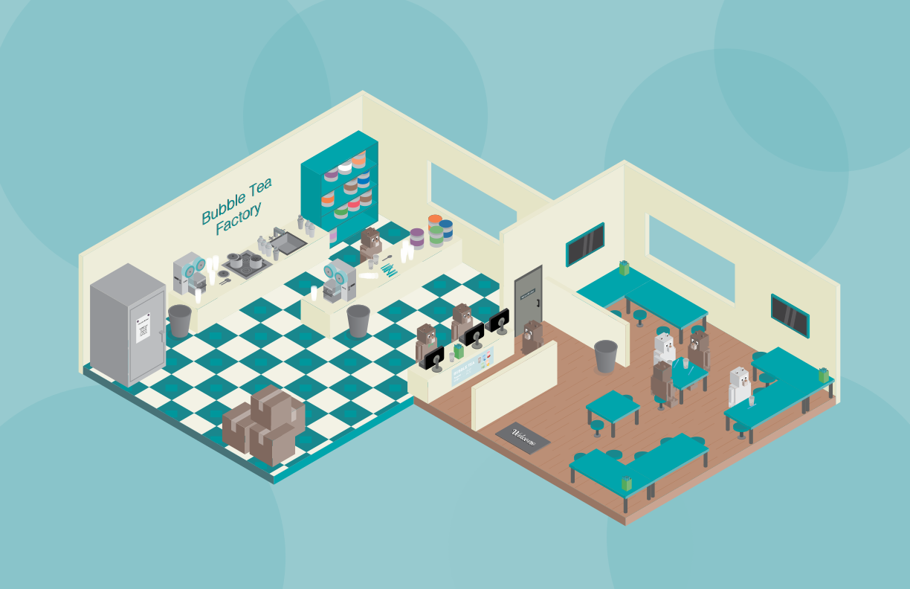

Bubble Tea Factory
Process
It started out with picking a theme. Then it was coming out with creative fun characters placing them in a scene. Throughout this process, there were a lot of sketches. After that it was hours and hours and hours of work on Adobe Illustrator.. The details on the characters bring more life to it and gives the scene a light source.
Challenges
The challenge was to make a busy scene. Having to come up with enough interesting characters, every one of them had to be unique and carries a fun personality. Each character has a lot of details added to it, by putting a light shadow for the reflected light and a dark shadow to bring the character to life.